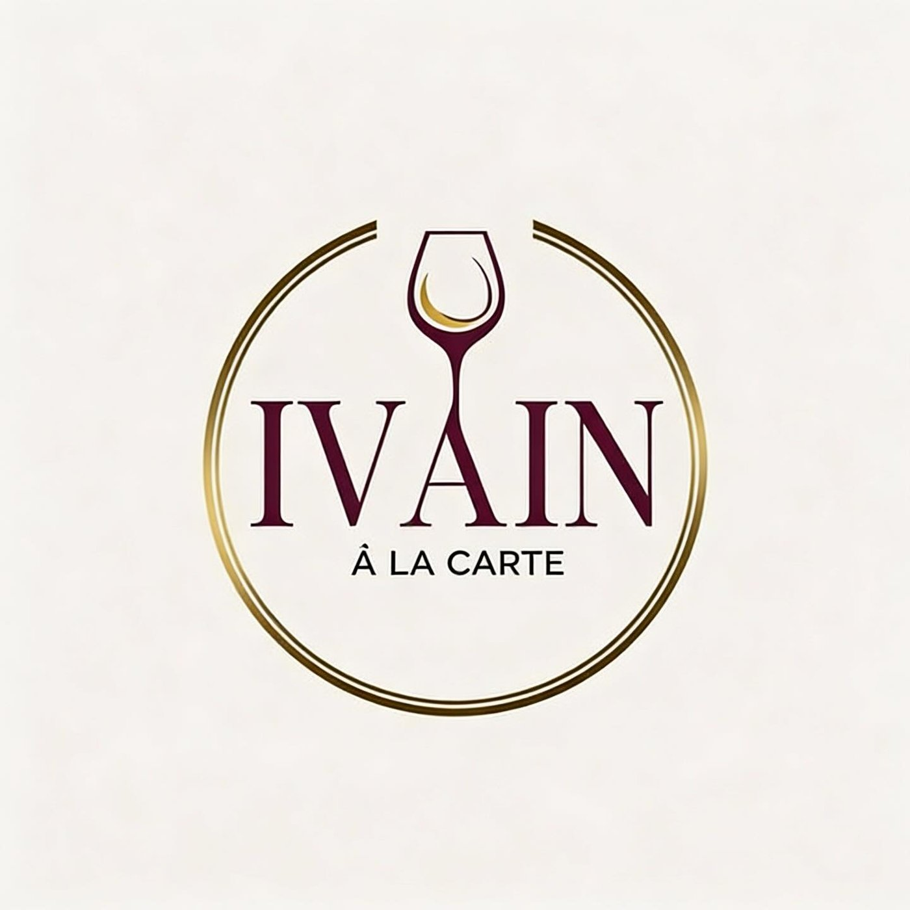
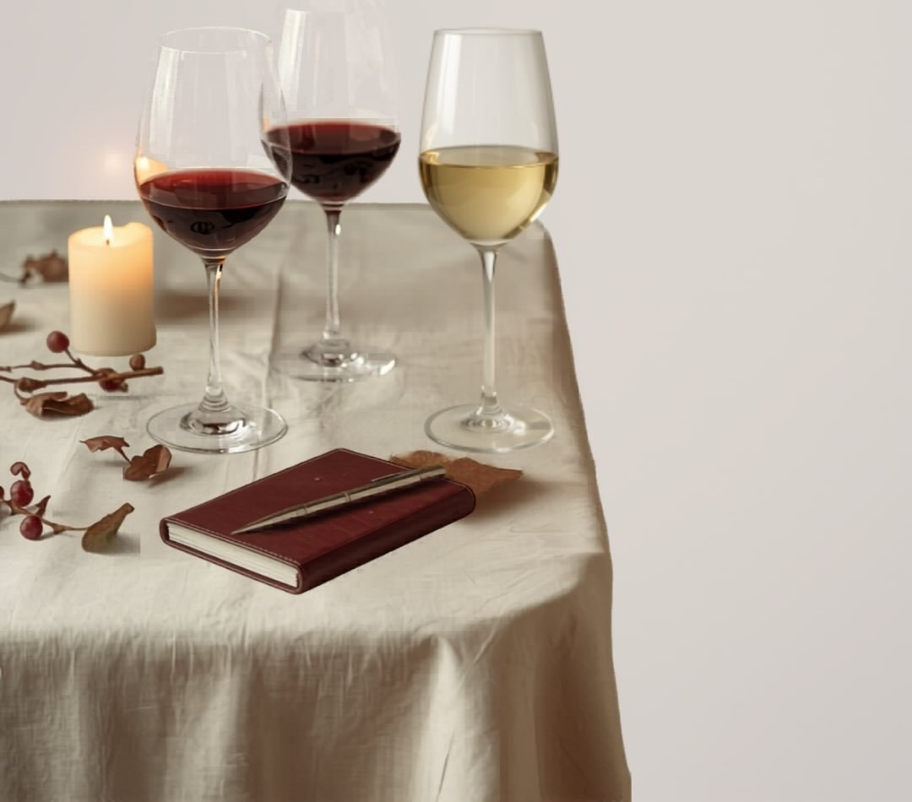
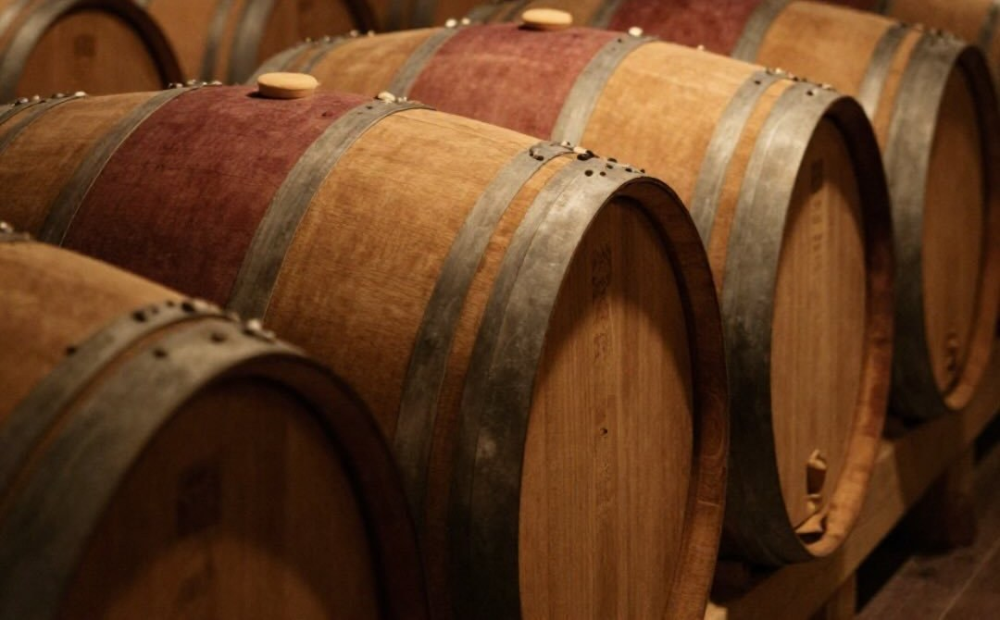
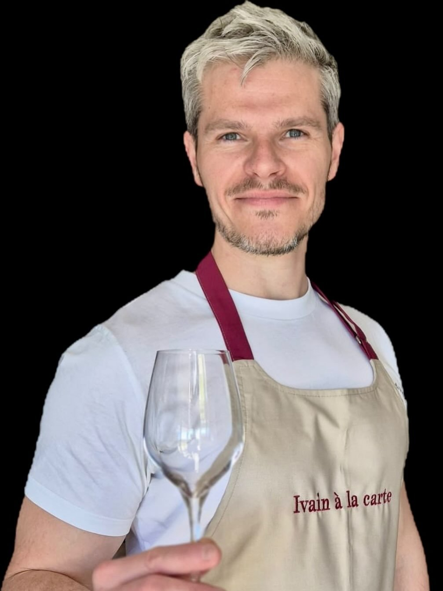

Vendangeur
55 € / personne
Pour démarrer en douceur.
Des vins accessibles et soignés, pour découvrir le vin sans jargon et prendre confiance dans le verre.
Par exemple : « Tour de Loire » ou « Sud : d'Ouest en Est ».

Sommelier à domicile
Je viens chez vous transformer une soirée en dégustation.
Sans jargon, sans snobisme, mais avec exigence.

L'idée est simple : transformer votre salon ou votre cuisine en véritable club de dégustation, détendu et sur mesure.
Pas un cours magistral. Un moment convivial où l'on apprend sans pression, et dont on repart avec des repères utiles pour ses prochaines bouteilles.
2 à 5 personnes2 à 4 vinsenviron 2 hchez vous
Île-de-France, dans un rayon de 30 km autour de Marly-le-Roi
On observe. On sent. On goûte.
On compare. On hésite. On débat. On se surprend.
55 € / personne
Pour démarrer en douceur.
Des vins accessibles et soignés, pour découvrir le vin sans jargon et prendre confiance dans le verre.
Par exemple : « Tour de Loire » ou « Sud : d'Ouest en Est ».
65 € / personne
Pour explorer styles et terroirs.
Une lecture plus fine et une sélection plus affirmée, pour aller plus loin dans la comparaison.
Notamment : Bourgogne / Bordeaux, ou Rive gauche / Rive droite.
75 € / personne
Pour aller plus loin ensemble.
Des cuvées plus pointues et des comparaisons plus poussées, sans perdre le plaisir du verre.
Notamment : Alsace / Allemagne, ou Ancien / Nouveau Monde.
sur devis
Imaginez votre dégustation.
Une dégustation sur mesure, selon vos envies, votre occasion ou vos thèmes de prédilection. Avec ma sélection, ou autour de votre cave.
Également pour les groupes de plus de 5 personnes et les événements d'entreprise, avec un tarif adapté à votre demande.
Formules Vendangeur, Vigneron et Œnologue : de 2 à 5 personnes. Au-delà, contactez-moi pour une formule À la carte.

Qui est autour de la table, ce que vous aimez déjà, ce que vous avez envie de découvrir : régions, cépages, domaines, sols, méthodes. Un thème peut aussi être choisi ensemble en amont, pour préparer la soirée avec soin.
Je vous propose 2 à 4 vins, issus de votre cave ou de ma sélection. Nous les dégustons dans un ordre pensé pour raconter une histoire — en restant attentif à vos envies du moment.
Quiz, dégustation à l'aveugle, échanges autour du verre : apprendre en s'amusant. Mon rôle n'est pas de réciter des fiches techniques, mais de vous donner des repères simples et de vous aider à mettre des mots sur vos sensations.

Avec un nom pareil, difficile d'échapper au vin.
Ma carrière dans la tech était toute tracée quand mon épouse m'a offert un week-end d'initiation à la dégustation en Bourgogne. Elle ne se doutait pas que je la « saoulerais » ensuite tous les jours avec ça.
Depuis, je n'ai plus cessé d'explorer ce qui se passe entre le raisin et le verre : régions viticoles, salons, clubs de dégustation, tables étoilées, vignerons et Meilleurs Ouvriers de France. En chemin, quelques certifications — Master ProDégustation, EVE® Expert Dégustation, WSET 3 — et une 3e place au EVE® Wine Tasting Masters, championnat international de dégustation à l'aveugle.
Mais ce qui m'intéresse, ce n'est pas d'aligner les diplômes. C'est d'aider des personnes curieuses à démystifier le vin et à ressentir l'intention de celles et ceux qui le font.
★★★★★
« Jérôme a su s'adapter à nos attentes. Il connaît vraiment son sujet, reste accessible et sympa, et on apprend plein de choses ! »
— Ariane et Anthony
Écrivez-moi avec :
Nous échangerons ensuite sur la formule la plus adaptée.